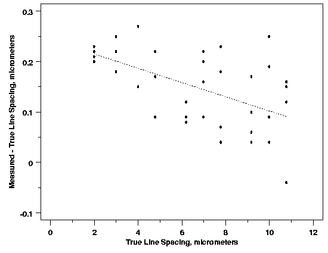

|
4.
Process Modeling
4.1. Introduction to Process Modeling 4.1.4. What are some of the different statistical methods for model building?
|
|||
| Handles Cases Where Data Quality Varies | One of the common assumptions underlying most process modeling methods, including linear and nonlinear least squares regression, is that each data point provides equally precise information about the deterministic part of the total process variation. In other words, the standard deviation of the error term is constant over all values of the predictor or explanatory variables. This assumption, however, clearly does not hold, even approximately, in every modeling application. For example, in the semiconductor photomask linespacing data shown below, it appears that the precision of the linespacing measurements decreases as the line spacing increases. In situations like this, when it may not be reasonable to assume that every observation should be treated equally, weighted least squares can often be used to maximize the efficiency of parameter estimation. This is done by attempting to give each data point its proper amount of influence over the parameter estimates. A procedure that treats all of the data equally would give less precisely measured points more influence than they should have and would give highly precise points too little influence. | ||
| Linespacing Measurement Error Data |  | Model Types and Weighted Least Squares | Unlike linear and nonlinear least squares regression, weighted least squares regression is not associated with a particular type of function used to describe the relationship between the process variables. Instead, weighted least squares reflects the behavior of the random errors in the model; and it can be used with functions that are either linear or nonlinear in the parameters. It works by incorporating extra nonnegative constants, or weights, associated with each data point, into the fitting criterion. The size of the weight indicates the precision of the information contained in the associated observation. Optimizing the weighted fitting criterion to find the parameter estimates allows the weights to determine the contribution of each observation to the final parameter estimates. It is important to note that the weight for each observation is given relative to the weights of the other observations; so different sets of absolute weights can have identical effects. | Advantages of Weighted Least Squares | Like all of the least squares methods discussed so far, weighted least squares is an efficient method that makes good use of small data sets. It also shares the ability to provide different types of easily interpretable statistical intervals for estimation, prediction, calibration and optimization. In addition, as discussed above, the main advantage that weighted least squares enjoys over other methods is the ability to handle regression situations in which the data points are of varying quality. If the standard deviation of the random errors in the data is not constant across all levels of the explanatory variables, using weighted least squares with weights that are inversely proportional to the variance at each level of the explanatory variables yields the most precise parameter estimates possible. | Disadvantages of Weighted Least Squares | The biggest disadvantage of weighted least squares, which many people are not aware of, is probably the fact that the theory behind this method is based on the assumption that the weights are known exactly. This is almost never the case in real applications, of course, so estimated weights must be used instead. The effect of using estimated weights is difficult to assess, but experience indicates that small variations in the the weights due to estimation do not often affect a regression analysis or its interpretation. However, when the weights are estimated from small numbers of replicated observations, the results of an analysis can be very badly and unpredictably affected. This is especially likely to be the case when the weights for extreme values of the predictor or explanatory variables are estimated using only a few observations. It is important to remain aware of this potential problem, and to only use weighted least squares when the weights can be estimated precisely relative to one another [Carroll and Ruppert (1988), Ryan (1997)]. | Weighted least squares regression, like the other least squares methods, is also sensitive to the effects of outliers. If potential outliers are not investigated and dealt with appropriately, they will likely have a negative impact on the parameter estimation and other aspects of a weighted least squares analysis. If a weighted least squares regression actually increases the influence of an outlier, the results of the analysis may be far inferior to an unweighted least squares analysis. | Futher Information | Further information on the weighted least squares fitting criterion can be found in Section 4.3. Discussion of methods for weight estimation can be found in Section 4.5. |

{kind=link}